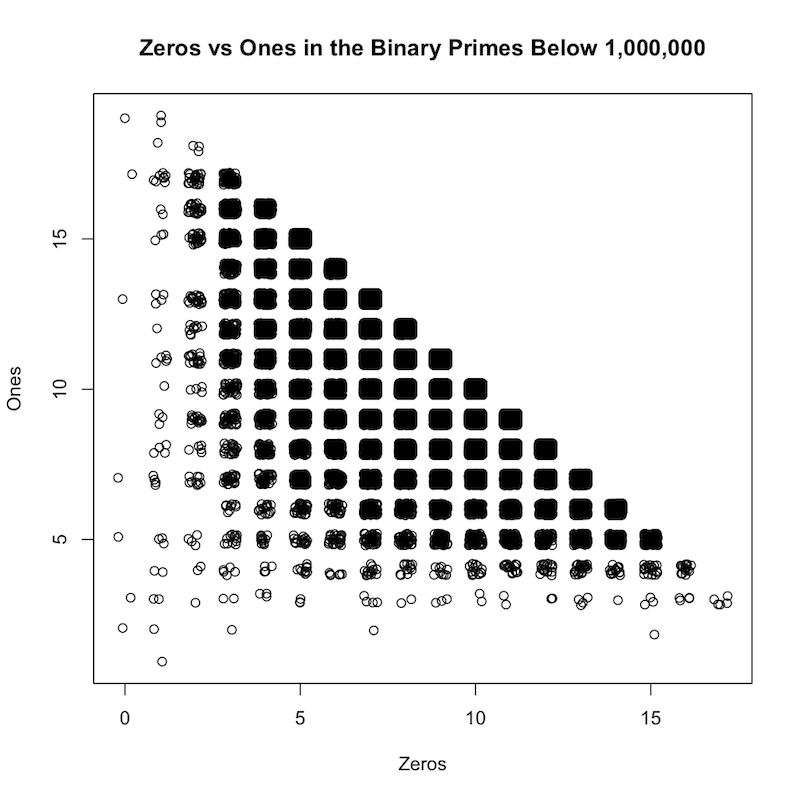

Ones vs Zeros in the Binary Primes
What does the graph look like when you convert each prime to binary and plot the ones versus the zeros?
Like this!

The exact positions of each data point are "jittered", so that the point is shifted from its original position slightly. This produces the "rounded square" effect. Otherwise the graph would not show the amount of data points at a position, because they would all overlap the same exact point.
Here are the commands to create this plot. First I use perl to generate the data file of ones versus zeros:
#!/usr/bin/env perl
use strict;
use warnings;
use Math::BaseConvert;
use Math::Prime::XS qw(primes);
my $limit = shift || 500;
for my $n (primes($limit)) {
my $x = cnv($n, 10, 2);
my $zeros = $x =~ tr/0//;
my $ones = $x =~ tr/1//;
print "$n,$zeros,$ones\n";
}
This script is called the brilliant name of "ones" - Then I run it and pipe the output to a file:
perl ones > ~/tmp/ones.txt
Then I plot with R:
x = read.csv('~/tmp/ones.txt', header=F)
plot(jitter(x$V2), jitter(x$V3), xlab='Zeros', ylab='Ones', main='Zeros vs Ones in the Binary Primes Below 1,000,000')